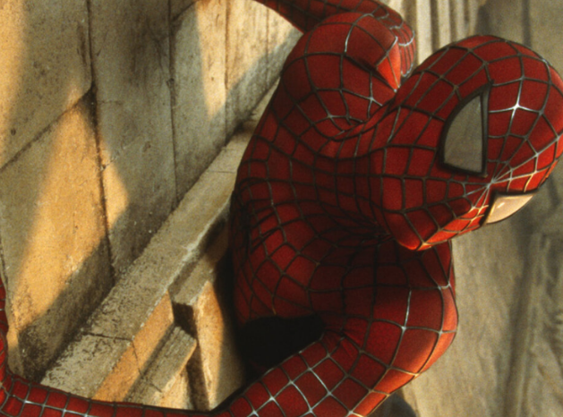

Últimas notícias

Cientistas criam teia do Homem-Aranha em laboratório; entenda
📅 31/01/2025 às 15:35
Andrew Garfield diz que não estará em “Homem-Aranha 4”, mas deixa brechas
📅 03/01/2025 às 10:17

Seu Amigão da Vizinhança”: nova série animada do Homem-Aranha ganha trailer
📅 03/01/2025 às 10:17